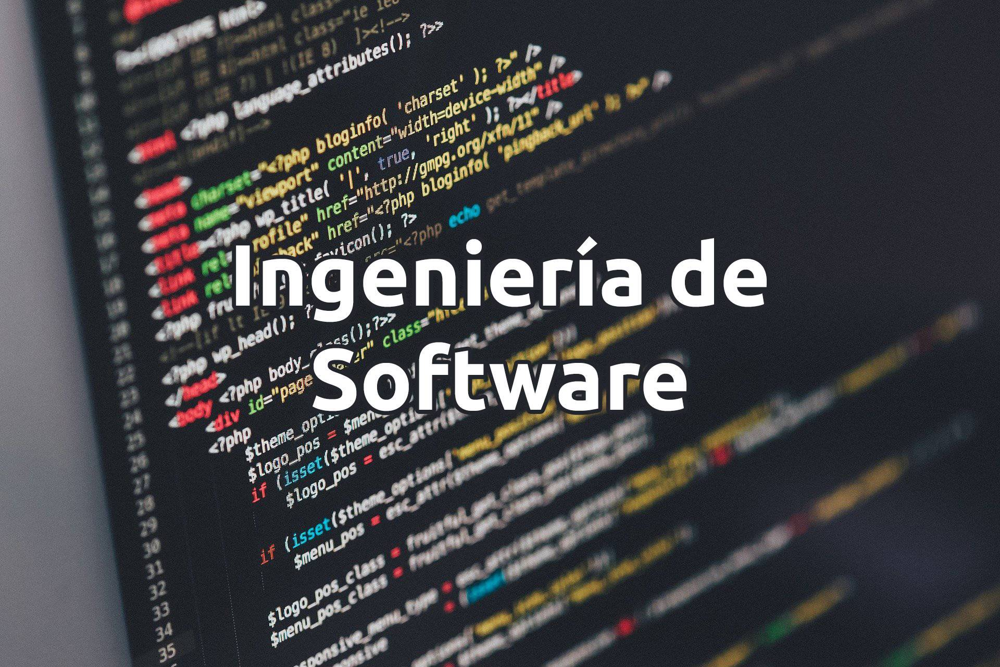

Crea el futuro: Diseña, desarrolla, innova.
La Ingeniería en Software es una disciplina de la ingeniería que se centra en el diseño, desarrollo, mantenimiento y gestión de sistemas de software. Su propósito es aplicar principios y métodos de ingeniería para crear software de alta calidad que satisfaga las necesidades de los usuarios y se entregue dentro de plazos y presupuestos establecidos.
El campo abarca el ciclo de vida del software, que incluye varias etapas clave como la planificación, donde se definen los objetivos del proyecto; el análisis de requisitos, que implica recolectar y documentar las necesidades del cliente; el diseño, que establece la arquitectura del sistema y la interacción entre sus componentes; la implementación, donde se lleva a cabo la codificación; y las pruebas, que se realizan para detectar errores y asegurar el correcto funcionamiento del software.
La metodología de desarrollo es otro aspecto fundamental en la Ingeniería en Software. Se utilizan enfoques como el modelo en cascada, que sigue un proceso lineal, y el desarrollo ágil, que permite mayor flexibilidad y adaptación a cambios durante el desarrollo. Estas metodologías ayudan a gestionar proyectos de manera eficiente y a facilitar la colaboración entre equipos.
El mantenimiento y soporte del software son cruciales después de su implementación, ya que los sistemas requieren actualizaciones, correcciones y mejoras para adaptarse a nuevas necesidades o tecnologías. La Ingeniería en Software es vital en el contexto actual, donde casi todas las industrias dependen de soluciones informáticas para mejorar su operativa y productividad.
Al fomentar la innovación tecnológica, esta disciplina no solo contribuye al desarrollo de nuevas herramientas y aplicaciones, sino que también mejora la calidad de vida al hacer la tecnología más accesible y efectiva. En resumen, la Ingeniería en Software combina aspectos técnicos, de gestión y de diseño, proporcionando soluciones que añaden valor a las organizaciones y a la sociedad en general.
En ITSON, la Ingeniería en Software te da las herramientas para crear soluciones tecnológicas que responden a las necesidades del mundo actual. Desde aplicaciones web hasta inteligencia artificial, este programa te prepara para enfrentar desafíos reales y te conecta con empresas locales e internacionales. Aprenderás de docentes con experiencia en la industria y podrás aplicar tus conocimientos en proyectos que enriquecen tu portafolio y te abren puertas en el mercado laboral. Si buscas una carrera en tecnología con oportunidades para crecer y colaborar, ITSON es tu mejor opción. ¡Explora el futuro de la tecnología con nosotros!.
Concepto de Ingeniería de Software: La ingeniería de software es una disciplina que se encarga del diseño, desarrollo, mantenimiento y gestión de sistemas de software de alta calidad. Su objetivo es aplicar principios científicos y matemáticos para crear software eficiente, seguro y adaptado a las necesidades específicas de los usuarios. Esta disciplina abarca todo el ciclo de vida del software, desde la planificación y análisis de requerimientos hasta la implementación, pruebas y mantenimiento continuo. La ingeniería de software busca optimizar el uso de recursos y reducir los errores, garantizando que el producto final sea confiable y cumpla con los estándares de calidad.
La ingeniería de software se posiciona como una disciplina esencial en el campo de la computación, integrando técnicas de ingeniería con las demandas del desarrollo de software para satisfacer las necesidades del mercado.
Entre las tendencias actuales en ingeniería de software se encuentran la adopción creciente de la inteligencia artificial y el aprendizaje automático, que optimizan el desarrollo y mantenimiento del software al automatizar tareas como pruebas y detección de errores. También son relevantes la arquitectura de microservicios y el desarrollo en la nube, que permiten una mayor escalabilidad y despliegue continuo de aplicaciones. Además, la integración de ciberseguridad desde el diseño y la implementación de prácticas ágiles y DevOps fomentan la colaboración y la eficiencia en los equipos de trabajo. La utilización de herramientas de bajo código también está en aumento, facilitando la participación de usuarios sin experiencia en programación en el proceso de desarrollo.
El software se define como un conjunto de instrucciones o programas que permiten realizar tareas específicas en dispositivos informáticos, facilitando la interacción entre el usuario y el hardware. Existen varios tipos de software, incluyendo software de sistema (como sistemas operativos), software de aplicación (programas como procesadores de texto) y software de desarrollo (herramientas para crear otros programas). Las cualidades del software abarcan aspectos como eficiencia, seguridad, usabilidad y mantenibilidad, garantizando su correcto funcionamiento, protección contra amenazas, facilidad de uso y adaptabilidad a cambios futuros. Un software de calidad se distingue por su portabilidad, confiabilidad y rendimiento óptimo.
Los sistemas de información se encargan de recopilar, procesar, almacenar y distribuir datos para facilitar la toma de decisiones y mejorar la eficiencia organizacional. Estos sistemas apoyan distintos tipos de decisiones: estratégicas (a largo plazo), tácticas (gestión intermedia) y operativas (diarias). Los usuarios de la información en estos sistemas abarcan desde la alta dirección y gerentes intermedios hasta el personal operativo y, en ocasiones, clientes externos. Son fundamentales para optimizar procesos, apoyar la planificación y coordinar actividades dentro de las organizaciones.
Los compromisos éticos en el desarrollo de software implican la responsabilidad de crear aplicaciones seguras, eficientes y respetuosas de la privacidad y derechos de los usuarios. Los desarrolladores deben asegurarse de que el software funcione de manera confiable, minimizando errores y riesgos que puedan afectar a los usuarios o sus datos. Asimismo, deben evitar prácticas como el plagio de código o el uso no autorizado de propiedad intelectual, respetando licencias y derechos de autor. Es crucial también ser transparente respecto a las funcionalidades del software y el uso de los datos de los usuarios, fomentando la honestidad y confianza en la relación con clientes y usuarios.
Aquí va el contenido específico para la Fase 1 del ciclo de vida del software...
Aquí va el contenido específico para la Fase 2 del ciclo de vida del software...
Aquí va el contenido específico para el Aspecto 1 de la importancia del software...
Aquí va el contenido específico para el Aspecto 2 de la importancia del software...